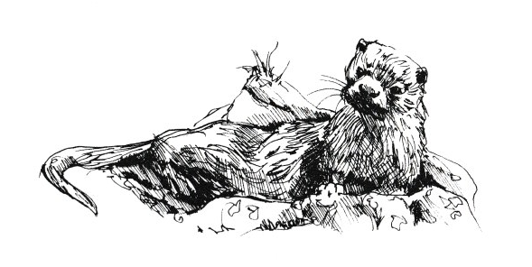

JOE
Joe knocked on the door and Pudding’s mother opened it.
“I’ve come to pay my respects, to wish you a Merry Christmas and a Happy New Year.”
“Come in, come in do. Harry, get the wine!” Harry was already down in the cellar. He selected a bottle of parsnip wine and carried it in to his guest.
“I heard his voice, Ethel.”
“My, that’s nice and clear” observed Joe.
“Should be – it’s two year old.”
“My, that warms the cockles of your heart,” said Joe as he knocked back his second glass. ‘Yes,’ thought his host, ‘he’s going to have a game.’
Joe was combining business with pleasure.
“I’ve got to go now,” he said. “I promised to pick up that armchair from Syd Tingey, that he’s upholstered for me.” The wine was mellow and Joe had to keep reminding himself of his mission.
With a few more handshakes, “Merry Christmas and Happy New Year,” Joe stepped out into the dark December night.
“Mind the pump.”
“Aha, I shall be alright once I get me bearings,” said Joe.
“You’d better go with him, Meyrick ” said Pudding’s mum.
“Just what I was thinking, Mum.” Away they went, Joe keeping out in the middle of the road, it was easier walking. As he put it, his legs didn’t get mixed up! (You know what I mean.)
Now Syd lived in a cottage known as The Rock, perched on the side of the hill as you came down into the village. The workshop was up a narrow stone built path and behind the cottage. There was no trouble going up, but coming down with the chair on his shoulders and with his head rammed in the seat wasn’t so easy. As Joe said, “I was a bit mommered, sort of flummoxed like.” Joe cannoned off the wall onto the rainbutt.
“Steady up and back, whoa!” shouts Joe, as the cobbled path dipped sharply down to street level. “Boy, her be running away with me!”
“Sit in her Joe, sit in her” yelled Meyrick “she’ll be taking you away.” With a bound and a heave Joe turned turtle; one minute he was carrying the chair, next minute the chair was carrying Joe, head down, legs kicking away in the air, heading back down the street towards the pond. The two of them got the chair back on his shoulders, with many false starts. Joe only needed a nudge and he was all over the place. As he said, “My legs be so light they goes everywhere!”
A few of us were now helping, being as Joe lived at Aynho, two miles away. We gave a little push, not always in the right direction but it added to the entertainment. It took an hour to get to the top of Turnpike. Joe was hot and a bit bothered.
“I could do with a drink, just to wet me whistle like,” and so saying he went to the Bear for a few, the rest stopped with the chair. After refreshing himself, away we went down Hockley towards Aynho. Never was such a sight. Some pushing, some pulling, and some steadying Joe with the chair; sometimes we carried it to give Joe a rest, but by this time we were helpless with laughter for the pesky thing had a will of its own. Said Joe, “I’m willing my feet and legs, they’re as light as a feather, but it’s like a ship in a storm, I sort of tacks this way then that, slow at first then gathers speed. I had to sit on her tight to hold her."
use got to the crossroads at Aynho corner. It was too good to miss, we let him go. The road was downhill to Croughton, in the opposite way that he wanted to go, but the chair and Joe got started downhill. The more Joe tried to hold back, the faster he went.
“Hold it Joe, put the brakes on, pull in the sails” we yelled. Joe couldn’t keep it up much longer.
“Sit in it Joe. Sit in it, man” no use. Joe caught his feet cagwargled in his legs; down they went, he stuck to that chair, right smack bang in the hedge they went – it knocked the stuffing out of Joe and didn’t do the chair much good either. We picked Joe up and carried him to his house and left him fast asleep in the chair. Someone banged on the door, and we came laughing back to Souldern.
When we saw Joe afterwards he couldn’t remember how he came to be sitting in his chair out in the garden two nights before Christmas, with his vegetables piled around him – onions cabbages etc. As one lad said as we left Joe:
“It reminds me of the Harvest Festival!”
